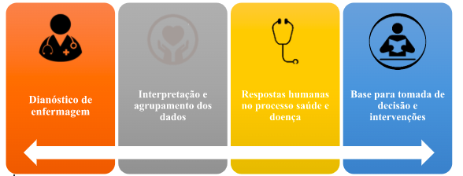

North American Nursing Diagnosis Association (NANDA-I)
Risco de desequilíbrio eletrolítico: suscetibilidade a mudanças nos níveis dos eletrólitos
séricos.
-
Fatores de risco: Volume de líquidos deficiente ou excessivo, vômito e diarreia.
-
Condições associadas: Disfunção endócrina, disfunção renal, mecanismo de regulação comprometido e regime
de tratamento.
Volume de líquido excessivo: entrada excessiva e/ou retenção de líquidos.
-
Características definidoras: Anasarca, alteração na pressão arterial, estado respiratório, estado
mental, desequilíbrio eletrolítico, ganho de peso, oligúria, dentre outros.
-
Fatores relacionados: Entrada excessiva de líquidos e/ou sódio.
-
Condição associada: Mecanismo de regulação comprometido.
Volume de líquido deficiente: diminuição do líquido intravascular, intersticial e/ou
intracelular.
-
Características definidoras: alteração do estado mental, turgor da pele, diminuição do débito urinário,
fraqueza, pele ressecada, sede e perda de peso.
-
Fatores relacionados: barreira ao acesso a líquidos, ingestão insuficiente.
-
Condições associadas: Perda excessiva de líquido, desvios que afetam a absorção ou ingestão, mecanismo
de regulação comprometidos.
Você pode conferir informações adicionais sobre a composição de diagnósticos de enfermagem no material
abaixo:
https://www.youtube.com/watch?v=ZDr1lGBirvA